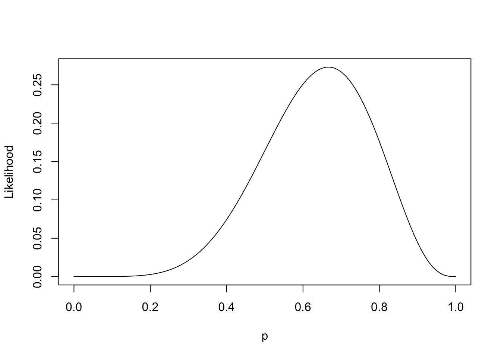

I’ve begun reading Statistical Rethinking by Richard McElreath: Website, and I want to log some of my thoughts that came to mind while working through his ideas on modern statistical science.
Chapter 2
In this chapter, a hypothetical experiment was introduced in which an observer collects data about the proportion of water on a globe (to understand the true proportion of water on earth).
Let \(p\) denote the proportion of water on the globe, \(W\) the number of observations that yielded “water”, and \(L\) the number of observations that yielded “land”. By the Binomial distribution:
\[ Pr(W=w,L=l\quad|\quad p)={w+l\choose w}p^w(1-p)^l \]
Now presume the observer recorded \(W=6\) and \(L=3\) in nine trials. The “likelihood” of these data can be plotted as a function of probability:
And this is by no means a probabiltity distribution. It doesn’t sum to one; it integrates to 0.1. However the recognition of this function is a crucial step towards two possible modes of inference:
- In a classical sense, this function represents an objective to maximize, then compare against a null hypothesis (often \(H_0: p=0.5\)).
- In a Bayesian sense, this function represents one piece of the joint distribution of \(W, L, p\) (the other piece being the prior on \(p\)). And this is the mode of inference advocated by the book.
When we start with a uniform prior \(p\sim\text{Beta}(1, 1)\), we end up with a posterior that looks uncannily like our likelihood function:


They’re actually the same function, just with different y-axis scales. I previously didn’t realize that…
Likelihoods as Objectives
As part of the classical mode of inference, one might reasonably seek to maximize the above likelihood function \(\mathcal{L}\), setting \(p=\hat{p}\) at maximal likelihood, then comparing the ratio of likelihoods between \(\mathcal{L}(\hat{p})\) and \(\mathcal{L}(p_0)\). It turns out, when this ratio is greater than some constant \(c\), one would rationally conclude that \(p\neq p_0\) (in other words, one rejects the null hypothesis).
So contrasting the two modes of inference: in the classical sense, one compares two points along the likelihood curve to posit evidence against some hypothesis \(H_0\). In a Bayesian sense, one obtains a posterior distribution over plausible values of \(p\), which can be further analyzed for compatability with any set of hypotheses. And the realization for me (at least in this trivial example) is that the likelihood and posterior functions are the exact same shape.
Reflecting on this a little more, I can understand how the relative simplicity of the classical approach might be appealing at the start of a scientific inquiry, say, when we don’t know much about the phenomenon but expect to learn a lot quickly. However, when an inquiry matures to the point of having data readily available, it seems silly to forgo the benefit of having the entire distribution of a parameter available to interrogate. It’s clear that the latter offers a richer description of the unknown phenomenon. Perhaps an analogy would be like entering a dark cavernous tunnel, where the classical approach affords you looks at two possible paths forward (one of which is a dead-end and the other quite a promising lead). The Bayesian approach, on the other hand, affords you something like a map of multiple paths forward.